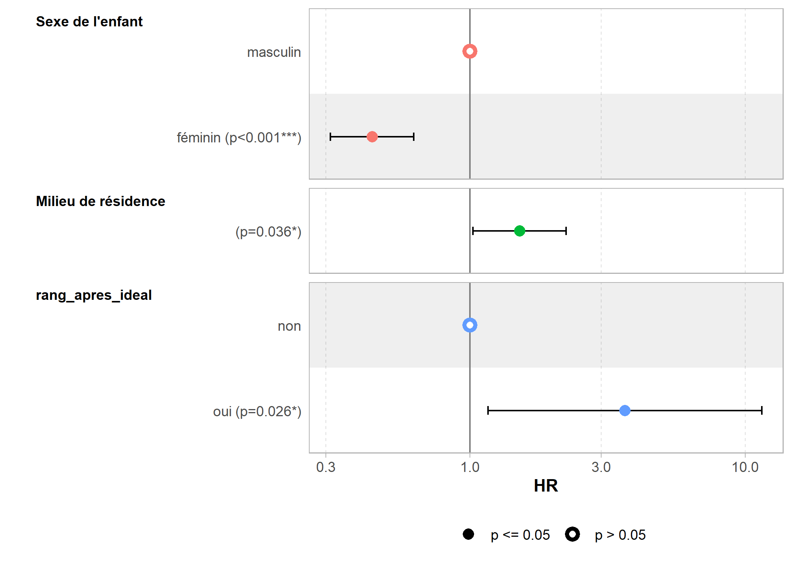

Analyse de survie
Ce chapitre est en cours d’écriture.
Ressources en ligne
L’extension centrale pour l’analyse de survie est survival.
Un très bon tutoriel (en anglais et en 3 étapes), introduisant les concepts de l’analyse de survie, des courbes de Kaplan-Meier et des modèles de Cox et leur mise en oeuvre pratique sous R est disponible en ligne :
- http://www.sthda.com/english/wiki/survival-analysis-basics
- http://www.sthda.com/english/wiki/cox-proportional-hazards-model
- http://www.sthda.com/english/wiki/cox-model-assumptions
Pour un autre exemple (toujours en anglais) d’analyse de survie avec survival, on pourra se référer à https://rpubs.com/vinubalan/hrsurvival.
Pour représenter vos résultats avec ggplot2, on pourra avoir recours à l’extension survminer présentée en détails sur son site officiel (en anglais) : http://www.sthda.com/english/rpkgs/survminer/. On pourra également avoir recours à la fonction ggsurv de l’extension GGally présentée à l’adresse http://ggobi.github.io/ggally/#ggallyggsurv.
A noter, il est possible d’utiliser la fonction step sur un modèle de Cox, pour une sélection pas à pas d’un meilleur modèle basé sur une minimisation de l’AIC (voir le chapitre sur la régression logistique).
L’excellente extension broom peut également être utilisée sur des modèles de survie (Kaplan-Meier ou Cox) pour en convertir les résultats sous la forme d’un tableau de données.
Pour approfondir les possibilités offertes par l’extension survival, on pourra également consulter les différentes vignettes fournies avec l’extension (voir https://cran.r-project.org/package=survival).
Un exemple concret : mortalité infanto-juvénile
Dans cet exemple, nous allons utiliser le jeu de données fecondite fourni par l’extension questionr. Ce jeu de données comporte trois tableaux de données : menages, femmes et enfants.
Nous souhaitons étudier ici la survie des enfants entre la naissance et l’âge de 5 ans. Dans un premier temps, nous comparerons la survie des jeunes filles et des jeunes garçons. Dans un second temps, nous procéderons à une analyse multivariée en prenant en compte les variables suivantes :
- sexe de l’enfant
- milieu de résidence
- niveau de vie du ménage
- structure du ménage
- niveau d’éducation de la mère
- âge de la mère à la naissance de l’enfant
- enfin, une variable un peu plus compliquée, à savoir si le rang de naissance de l’enfant (second, troisième, quatrième, etc.) est supérieur au nombre idéal d’enfants selon la mère.
Nous allons préparer les données selon deux approches : soit en utilisant l’extension data.table (voir l’introduction à data.table), soit en utilisant l’extension dplyr (voir l’introduction à dplyr).
Chargeons les données en mémoire et listons les variables disponibles.
library(questionr)
data(fecondite)
lookfor(menages) variable label
1 id_menage Identifiant du ménage
2 taille Taille du ménage (nombre de membres)
3 sexe_chef Sexe du chef de ménage
4 structure Structure démographique du ménage
5 richesse Niveau de vie (quintiles)lookfor(femmes) variable
1 id_femme
2 id_menage
3 poids
4 date_entretien
5 date_naissance
6 age
7 milieu
8 region
9 educ
10 travail
11 matri
12 religion
13 journal
14 radio
15 tv
16 nb_enf_ideal
17 test
label
1 Identifiant de l'enquêtée
2 Identifiant du ménage
3 Poids statistique
4 Date de passation du questionnaire
5 Date de naissance
6 Âge révolu (en années) à la date de passation du questionnaire
7 Milieu de résidence
8 Région de résidence
9 Niveau d'éducation
10 A un emploi ?
11 Statut matrimonial
12 Religion
13 Lit la presse ?
14 Ecoute la radio ?
15 Regarde la télévision ?
16 Nombre idéal d'enfants
17 A déjà fait un test de dépistage du VIH ?lookfor(enfants) variable
1 id_enfant
2 id_femme
3 date_naissance
4 sexe
5 survie
6 age_deces
label
1 Identifiant de l'enfant
2 Identifiant de la mère
3 Date de naissance
4 Sexe de l'enfant
5 L'enfant est-il toujours en vie ?
6 Age au décès (en mois)Préparation des données avec data.table
Tout d’abord, regardons sous quel format elles sont stockées.
class(menages)[1] "tbl_df" "tbl" "data.frame"describe(menages)[1814 obs. x 5 variables] tbl_df tbl data.frame
$id_menage: Identifiant du ménage
numeric: 1 2 3 4 5 6 7 8 9 10 ...
min: 1 - max: 1814 - NAs: 0 (0%) - 1814 unique values
$taille: Taille du ménage (nombre de membres)
numeric: 7 3 6 5 7 6 15 6 5 19 ...
min: 1 - max: 31 - NAs: 0 (0%) - 30 unique values
$sexe_chef: Sexe du chef de ménage
labelled double: 2 1 1 1 1 2 2 2 1 1 ...
min: 1 - max: 2 - NAs: 0 (0%) - 2 unique values
2 value labels: [1] homme [2] femme
$structure: Structure démographique du ménage
labelled double: 4 2 5 4 4 4 5 2 5 5 ...
min: 1 - max: 5 - NAs: 0 (0%) - 5 unique values
6 value labels: [0] pas d'adulte [1] un adulte [2] deux adultes de sexe opposé [3] deux adultes de même sexe [4] trois adultes ou plus avec lien de parenté [5] adultes sans lien de parenté
$richesse: Niveau de vie (quintiles)
labelled double: 1 2 2 1 1 3 2 5 4 3 ...
min: 1 - max: 5 - NAs: 0 (0%) - 5 unique values
5 value labels: [1] très pauvre [2] pauvre [3] moyen [4] riche [5] très richeLes tableaux de données sont au format tibble (c’est-à-dire sont de la classe tbl_df) et les variables catégorielles sont du type labelled (voir le chapitre sur les vecteurs labellisés). Ce format correspond au format de données si on les avait importées depuis SPSS avec l’extension haven (voir le chapitre sur l’import de données).
En premier lieu, il nous faut convertir les tableaux de données au format data.table, ce qui peut se faire avec la fonction setDT1. Par ailleurs, nous allons également charger en mémoire l’extension labelled pour la gestion des vecteurs labellisés.
library(labelled)
library(data.table)
setDT(menages)
setDT(femmes)
setDT(enfants)En premier lieu, il nous faut calculer la durée d’observation des enfants, à savoir le temps passé entre la date de naissance (variable du fichier enfants) et la date de passation de l’entretien (fournie par le tableau de données femmes). Pour récupérer des variables du fichier femmes dans le fichier enfants, nous allons procéder à une fusion de table (voir le chapitre dédié). Pour le calcul de la durée d’observation, nous allons utiliser le package lubridate (voir le chapitre calculer un âge et celui sur la gestion des dates). Nous effectuerons l’analyse en mois (puisque l’âge au décès est connu en mois). Dès lors, la durée d’observation sera calculée en mois.
enfants <- merge(
enfants,
femmes[, .(id_femme, date_entretien)],
by = "id_femme",
all.x = TRUE
)
# duree observation en mois
library(lubridate)
enfants[, duree_observation := time_length(interval(date_naissance, date_entretien), unit = "months")]ATTENTION : il y 11 enfants soi-disant nés après la date d’enquête ! Quelle que soit l’enquête, il est rare de ne pas observer d’incohérences. Dans le cas présent, il est fort possible que la date d’entretien puisse parfois être erronnée (par exemple si l’enquêteur a inscrit une date sur le questionnaire papier le jour du recensement du ménage mais n’ai pu effectué le questionnaire individuel que plus tard). Nous décidons ici de procéder à une correction en ajoutant un mois aux dates d’entretien problématiques. D’autres approches auraient pu être envisagées, comme par exemple exclure ces observations problématiques. Cependant, cela aurait impacté le calcul du range de naissance pour les autres enfants issus de la même mère. Quoiqu’il en soit, il n’y a pas de réponse unique. À vous de vous adapter au contexte particulier de votre analyse.
enfants[duree_observation < 0, date_entretien := date_entretien %m+% months(1)]
enfants[, duree_observation := time_length(interval(date_naissance, date_entretien), unit = "months")]Regardons maintenant comment les âges au décès ont été collectés.
freq(enfants$age_deces) n % val%
0 62 3.9 43.7
1 5 0.3 3.5
2 6 0.4 4.2
3 5 0.3 3.5
4 4 0.3 2.8
5 5 0.3 3.5
6 5 0.3 3.5
7 4 0.3 2.8
8 3 0.2 2.1
9 6 0.4 4.2
10 1 0.1 0.7
11 5 0.3 3.5
12 10 0.6 7.0
13 3 0.2 2.1
14 1 0.1 0.7
16 1 0.1 0.7
19 2 0.1 1.4
21 1 0.1 0.7
24 10 0.6 7.0
36 2 0.1 1.4
48 1 0.1 0.7
NaN 1442 91.0 NALes âges au décès sont ici exprimés en mois révolus. Les décès à un mois révolu correspondent à des décès entre 1 et 2 mois exacts. Par ailleurs, les durées d’observation que nous avons calculées avec time_length sont des durées exactes, c’est-à-dire avec la partie décimale. Pour une analyse de survie, on ne peut mélanger des durées exactes et des durées révolues. Trois approches peuvent être envisagées :
- faire l’analyse en mois révolus, auquel cas on ne gardera que la partie entière des durées d’observations avec la fonction
trunc; - considérer qu’un âge au décès de 3 mois révolus correspond en moyenne à 3,5 mois exacts et donc ajouter 0,5 à tous les âges révolus ;
- imputer un âge au décès exact en distribuant aléatoirement les décès à 3 mois révolus entre 3 et 4 mois exacts, autrement dit en ajoutant aléatoirement une partie décimale aux âges révolus.
Nous allons ici adopter la troisième approche en considérant que les décès se répartissent de manière uniforme au sein d’un même mois. Nous aurons donc recours à la fonction runif qui permets de générer des valeurs aléatoires entre 0 et 1 selon une distribustion uniforme.
enfants[, age_deces_impute := age_deces + runif(.N)]Pour définir notre objet de survie, il nous faudra deux variables. Une première, temporelle, indiquant la durée à laquelle survient l’évènement étudié (ici le décès) pour ceux ayant vécu l’évènement et la durée d’observation pour ceux n’ayant pas vécu l’évènement (censure à droite). Par ailleurs, une seconde variable indiquant si les individus ont vécu l’évènement (0 pour non, 1 pour oui). Or, ici, la variable survie est codée 0 pour les décès et 1 pour ceux ayant survécu. Pour plus de détails, voir l’aide de la fonction Surv.
enfants[, deces := 0]
enfants[survie == 0, deces := 1]
var_label(enfants$deces) <- "Est décédé ?"
val_labels(enfants$deces) <- c(non = 0, oui = 1)
enfants[, time := duree_observation]
enfants[deces == 1, time := age_deces_impute]Occupons-nous maintenant des variables explicatives que nous allons inclure dans l’analyse. Tout d’abord, ajoutons à la table enfants les variables nécessaires des tables femmes et menages. Notons qu’il nous faudra importer id_menage de la table femmes pour pouvoir fusionner ensuite la table enfants avec la table menages. Par ailleurs, pour éviter une confusion sur la variable date_naissance, nous renommons à la volée cette variable de la table femmes en date_naissance_mere.
enfants <- merge(
enfants,
femmes[, .(
id_femme, id_menage, milieu, educ,
date_naissance_mere = date_naissance, nb_enf_ideal
)],
by = "id_femme",
all.x = TRUE
)
enfants <- merge(
enfants,
menages[, .(id_menage, structure, richesse)],
by = "id_menage",
all.x = TRUE
)Les variables catégorielles sont pour l’heure sous formes de vecteurs labellisés. Or, dans un modèle, il est impératif de les convertir en facteurs pour qu’elles soient bien traitées comme des variables catégorielles (autrement elles seraient traitées comme des variables continues). On aura donc recours à la fonction to_factor de l’extension labelled.
enfants[, sexe := to_factor(sexe)]
enfants[, richesse := to_factor(richesse)]Regardons plus attentivement, la variable structure.
freq(enfants$structure) n
[0] pas d'adulte 0
[1] un adulte 45
[2] deux adultes de sexe opposé 505
[3] deux adultes de même sexe 71
[4] trois adultes ou plus avec lien de parenté 764
[5] adultes sans lien de parenté 199
%
[0] pas d'adulte 0.0
[1] un adulte 2.8
[2] deux adultes de sexe opposé 31.9
[3] deux adultes de même sexe 4.5
[4] trois adultes ou plus avec lien de parenté 48.2
[5] adultes sans lien de parenté 12.6
val%
[0] pas d'adulte 0.0
[1] un adulte 2.8
[2] deux adultes de sexe opposé 31.9
[3] deux adultes de même sexe 4.5
[4] trois adultes ou plus avec lien de parenté 48.2
[5] adultes sans lien de parenté 12.6Tout d’abord, la modalité pas d’adulte
n’est pas représentée dans l’échantillon. On aura donc recours à l’argument drop_unused_labels pour ne pas conserver cette modalité. Par ailleurs, nous considérons que la situation familiale à partir de laquelle nous voudrons comparer les autres dans notre modèle, donc celle qui doit être considérée comme la modalité de référence, est celle du ménage nucléaire. Cette modalité (deux adultes de sexe opposé
) n’étant pas la première, nous aurons recours à la fonction relevel{data-pkg = “stats”}.
enfants[, structure := to_factor(structure)]
enfants[, structure := relevel(structure, "deux adultes de sexe opposé")]Regardons la variable educ.
freq(enfants$educ) n % val%
[0] aucun 1084 68.4 68.4
[1] primaire 368 23.2 23.2
[2] secondaire 115 7.3 7.3
[3] supérieur 17 1.1 1.1La modalité supérieur
est peu représentée dans notre échantillon. Nous allons la fusionner avec la modalité secondaire
(voir la section Regrouper les modalités d’une variable du chapitre Recodage).
enfants[, educ2 := educ]
enfants[educ == 3, educ2 := 2]
val_label(enfants$educ2, 2) <- "secondaire ou plus"
val_label(enfants$educ2, 3) <- NULL
enfants[, educ2 := to_factor(educ2)]
freq(enfants$educ2) n % val%
aucun 1084 68.4 68.4
primaire 368 23.2 23.2
secondaire ou plus 132 8.3 8.3Calculons maintenant l’âge de la mère à la naissance de l’enfant (voir le chapitre Caluler un âge) et découpons le en groupes d’âges (voir la section Découper une variable numérique en classes du chapitre Recodage).
enfants[, age_mere_naissance := time_length(
interval(date_naissance_mere, date_naissance),
unit = "years"
)]
enfants$gpage_mere_naissance <- cut(
enfants$age_mere_naissance,
include.lowest = TRUE, right = FALSE,
breaks=c(13, 20, 30, 50)
)
levels(enfants$gpage_mere_naissance) <- c(
"19 ou moins", "20-29", "30 et plus"
)
enfants$gpage_mere_naissance <- relevel(enfants$gpage_mere_naissance, "20-29")
freq(enfants$gpage_mere_naissance) n % val%
20-29 888 56.1 56.1
19 ou moins 257 16.2 16.2
30 et plus 439 27.7 27.7Reste à calculer si le rang de naissance de l’enfant est supérieur au nombre idéal d’enfants tel que défini par la mère. On aura recours à la fonction rank appliquée par groupe (ici calculé séparément pour chaque mère). L’argument ties.method permet d’indiquer comment gérer les égalités (ici les naissances multiples, e.g. les jumeaux). Comme nous voulons comparer le rang de l’enfant au nombre idéal d’enfants, nous allons retenir la méthode "max" pour obtenir, dans le cas présent, le nombre total d’enfants déjà nés2. Avant de calculer un rang, il est impératif de trier préalablement le tableau (voir le chapitre Tris).
setorder(enfants, id_femme, date_naissance)
enfants[, rang := rank(date_naissance, ties.method = "max"), by = id_femme]
enfants[, rang_apres_ideal := "non"]
enfants[rang > nb_enf_ideal, rang_apres_ideal := "oui"]
enfants[, rang_apres_ideal := factor(rang_apres_ideal)]
enfants[, rang_apres_ideal := relevel(rang_apres_ideal, "non")]Préparation des données avec dplyr
Tout d’abord, regardons sous quel format elles sont stockées.
data(fecondite)
class(menages)[1] "tbl_df" "tbl" "data.frame"describe(menages)[1814 obs. x 5 variables] tbl_df tbl data.frame
$id_menage: Identifiant du ménage
numeric: 1 2 3 4 5 6 7 8 9 10 ...
min: 1 - max: 1814 - NAs: 0 (0%) - 1814 unique values
$taille: Taille du ménage (nombre de membres)
numeric: 7 3 6 5 7 6 15 6 5 19 ...
min: 1 - max: 31 - NAs: 0 (0%) - 30 unique values
$sexe_chef: Sexe du chef de ménage
labelled double: 2 1 1 1 1 2 2 2 1 1 ...
min: 1 - max: 2 - NAs: 0 (0%) - 2 unique values
2 value labels: [1] homme [2] femme
$structure: Structure démographique du ménage
labelled double: 4 2 5 4 4 4 5 2 5 5 ...
min: 1 - max: 5 - NAs: 0 (0%) - 5 unique values
6 value labels: [0] pas d'adulte [1] un adulte [2] deux adultes de sexe opposé [3] deux adultes de même sexe [4] trois adultes ou plus avec lien de parenté [5] adultes sans lien de parenté
$richesse: Niveau de vie (quintiles)
labelled double: 1 2 2 1 1 3 2 5 4 3 ...
min: 1 - max: 5 - NAs: 0 (0%) - 5 unique values
5 value labels: [1] très pauvre [2] pauvre [3] moyen [4] riche [5] très richeLes tableaux de données sont déjà au format tibble (c’est-à-dire sont de la classe tbl_df)3 et les variables catégorielles sont du type labelled (voir le chapitre sur les vecteurs labellisés). Ce format correspond au format de données si on les avait importées depuis SPSS avec l’extension haven (voir le chapitre sur l’import de données).
Nous allons charger en mémoire l’extension labelled pour la gestion des vecteurs labellisés en plus de dplyr.
library(dplyr)
library(labelled)En premier lieu, il nous faut calculer la durée d’observation des enfants, à savoir le temps passé entre la date de naissance (variable du fichier enfants) et la date de passation de l’entretien (fournie par le tableau de données femmes). Pour récupérer des variables du fichier femmes dans le fichier enfants, nous allons procéder à une fusion de table (voir le chapitre dédié). Pour le calcul de la durée d’observation, nous allons utiliser le package lubridate (voir le chapitre calculer un âge et celui sur la gestion des dates). Nous effectuerons l’analyse en mois (puisque l’âge au décès est connu en mois). Dès lors, la durée d’observation sera calculée en mois.
library(lubridate)
enfants <- enfants %>%
left_join(
femmes %>% select(id_femme, date_entretien),
by = "id_femme"
) %>%
mutate(duree_observation = time_length(
interval(date_naissance, date_entretien),
unit = "months"
))Warning: Column `id_femme` has different
attributes on LHS and RHS of joinATTENTION : il y 11 enfants soi-disant nés après la date d’enquête ! Quelle que soit l’enquête, il est rare de ne pas observer d’incohérences. Dans le cas présent, il est fort possible que la date d’entretien puisse parfois être erronnée (par exemple si l’enquêteur a inscrit une date sur le questionnaire papier le jour du recensement du ménage mais n’ai pu effectué le questionnaire individuel que plus tard). Nous décidons ici de procéder à une correction en ajoutant un mois aux dates d’entretien problématiques. D’autres approches auraient pu être envisagées, comme par exemple exclure ces observations problématiques. Cependant, cela aurait impacté le calcul du range de naissance pour les autres enfants issus de la même mère. Quoiqu’il en soit, il n’y a pas de réponse unique. À vous de vous adapter au contexte particulier de votre analyse.
enfants$date_entretien[enfants$duree_observation < 0] <-
enfants$date_entretien[enfants$duree_observation < 0] %m+% months(1)
enfants <- enfants %>%
mutate(duree_observation = time_length(
interval(date_naissance, date_entretien),
unit = "months"
))Regardons maintenant comment les âges au décès ont été collectés.
freq(enfants$age_deces) n % val%
0 62 3.9 43.7
1 5 0.3 3.5
2 6 0.4 4.2
3 5 0.3 3.5
4 4 0.3 2.8
5 5 0.3 3.5
6 5 0.3 3.5
7 4 0.3 2.8
8 3 0.2 2.1
9 6 0.4 4.2
10 1 0.1 0.7
11 5 0.3 3.5
12 10 0.6 7.0
13 3 0.2 2.1
14 1 0.1 0.7
16 1 0.1 0.7
19 2 0.1 1.4
21 1 0.1 0.7
24 10 0.6 7.0
36 2 0.1 1.4
48 1 0.1 0.7
NaN 1442 91.0 NALes âges au décès sont ici exprimés en mois révolus. Les décès à un mois révolu correspondent à des décès entre 1 et 2 mois exacts. Par ailleurs, les durées d’observation que nous avons calculées avec time_length sont des durées exactes, c’est-à-dire avec la partie décimale. Pour une analyse de survie, on ne peut mélanger des durées exactes et des durées révolues. Trois approches peuvent être envisagées :
- faire l’analyse en mois révolus, auquel cas on ne gardera que la partie entière des durées d’observations avec la fonction
trunc; - considérer qu’un âge au décès de 3 mois révolus correspond en moyenne à 3,5 mois exacts et donc ajouter 0,5 à tous les âges révolus ;
- imputer un âge au décès exact en distribuant aléatoirement les décès à 3 mois révolus entre 3 et 4 mois exacts, autrement dit en ajoutant aléatoirement une partie décimale aux âges révolus.
Nous allons ici adopter la troisième approche en considérant que les décès se répartissent de manière uniforme au sein d’un même mois. Nous aurons donc recours à la fonction runif qui permets de générer des valeurs aléatoires entre 0 et 1 selon une distribustion uniforme.
enfants <- enfants %>%
mutate(age_deces_impute = age_deces + runif(n()))Pour définir notre objet de survie, il nous faudra deux variables. Une première, temporelle, indiquant la durée à laquelle survient l’évènement étudié (ici le décès) pour ceux ayant vécu l’évènement et la durée d’observation pour ceux n’ayant pas vécu l’évènement (censure à droite). Par ailleurs, une seconde variable indiquant si les individus ont vécu l’évènement (0 pour non, 1 pour oui). Or, ici, la variable survie est codée 0 pour les décès et 1 pour ceux ayant survécu. Pour plus de détails, voir l’aide de la fonction Surv.
enfants <- enfants %>%
mutate(deces = if_else(survie == 0, 1, 0)) %>%
set_variable_labels(deces = "Est décédé ?") %>%
set_value_labels(deces = c(non = 0, oui = 1)) %>%
mutate(time = if_else(deces == 1, age_deces_impute, duree_observation))Occupons-nous maintenant des variables explicatives que nous allons inclure dans l’analyse. Tout d’abord, ajoutons à la table enfants les variables nécessaires des tables femmes et menages. Notons qu’il nous faudra importer id_menage de la table femmes pour pouvoir fusionner ensuite la table enfants avec la table menages. Par ailleurs, pour éviter une confusion sur la variable date_naissance, nous renommons à la volée cette variable de la table femmes en date_naissance_mere.
enfants <- enfants %>%
left_join(
select(femmes,
id_femme, id_menage, milieu, educ,
date_naissance_mere = date_naissance, nb_enf_ideal
),
by = "id_femme"
) %>%
left_join(
select(menages, id_menage, structure, richesse),
by = "id_menage"
)Warning: Column `id_femme` has different
attributes on LHS and RHS of joinLes variables catégorielles sont pour l’heure sous formes de vecteurs labellisés. Or, dans un modèle, il est impératif de les convertir en facteurs pour qu’elles soient bien traitées comme des variables catégorielles (autrement elles seraient traitées comme des variables continues). On aura donc recours à la fonction to_factor de l’extension labelled.
enfants <- enfants %>%
mutate(sexe = to_factor(sexe), richesse = to_factor(richesse))Regardons plus attentivement, la variable structure.
freq(enfants$structure) n
[0] pas d'adulte 0
[1] un adulte 45
[2] deux adultes de sexe opposé 505
[3] deux adultes de même sexe 71
[4] trois adultes ou plus avec lien de parenté 764
[5] adultes sans lien de parenté 199
%
[0] pas d'adulte 0.0
[1] un adulte 2.8
[2] deux adultes de sexe opposé 31.9
[3] deux adultes de même sexe 4.5
[4] trois adultes ou plus avec lien de parenté 48.2
[5] adultes sans lien de parenté 12.6
val%
[0] pas d'adulte 0.0
[1] un adulte 2.8
[2] deux adultes de sexe opposé 31.9
[3] deux adultes de même sexe 4.5
[4] trois adultes ou plus avec lien de parenté 48.2
[5] adultes sans lien de parenté 12.6Tout d’abord, la modalité pas d’adulte
n’est pas représentée dans l’échantillon. On aura donc recours à l’argument drop_unused_labels pour ne pas conserver cette modalité. Par ailleurs, nous considérons que la situation familiale à partir de laquelle nous voudrons comparer les autres dans notre modèle, donc celle qui doit être considérée comme la modalité de référence, est celle du ménage nucléaire. Cette modalité (deux adultes de sexe opposé
) n’étant pas la première, nous aurons recours à la fonction relevel{data-pkg = “stats”}.
enfants <- enfants %>%
mutate(structure = relevel(
to_factor(structure, drop_unused_labels = TRUE),
"deux adultes de sexe opposé"
))Regardons la variable educ.
freq(enfants$educ) n % val%
[0] aucun 1084 68.4 68.4
[1] primaire 368 23.2 23.2
[2] secondaire 115 7.3 7.3
[3] supérieur 17 1.1 1.1La modalité supérieur
est peu représentée dans notre échantillon. Nous allons la fusionner avec la modalité secondaire
(voir la section Regrouper les modalités d’une variable du chapitre Recodage).
enfants <- enfants %>%
mutate(educ2 = ifelse(educ == 3, 2, educ)) %>%
set_value_labels(educ2 = c(
aucun = 0,
primaire = 1,
"secondaire ou plus" = 2
)) %>%
mutate(educ2 = to_factor(educ2))
freq(enfants$educ2) n % val%
aucun 1084 68.4 68.4
primaire 368 23.2 23.2
secondaire ou plus 132 8.3 8.3Calculons maintenant l’âge de la mère à la naissance de l’enfant (voir le chapitre Caluler un âge) et découpons le en groupes d’âges (voir la section Découper une variable numérique en classes du chapitre Recodage).
enfants <- enfants %>%
mutate(
age_mere_naissance = time_length(
interval(date_naissance_mere, date_naissance),
unit = "years"
),
gpage_mere_naissance = cut(
age_mere_naissance,
include.lowest = TRUE, right = FALSE,
breaks=c(13, 20, 30, 50)
)
)
levels(enfants$gpage_mere_naissance) <- c(
"19 ou moins", "20-29", "30 et plus"
)
enfants$gpage_mere_naissance <- relevel(enfants$gpage_mere_naissance, "20-29")
freq(enfants$gpage_mere_naissance) n % val%
20-29 888 56.1 56.1
19 ou moins 257 16.2 16.2
30 et plus 439 27.7 27.7Reste à calculer si le rang de naissance de l’enfant est supérieur au nombre idéal d’enfants tel que défini par la mère. On aura recours à la fonction rank appliquée par groupe (ici calculé séparément pour chaque mère). L’argument ties.method permet d’indiquer comment gérer les égalités (ici les naissances multiples, e.g. les jumeaux). Comme nous voulons comparer le rang de l’enfant au nombre idéal d’enfants, nous allons retenir la méthode "max" pour obtenir, dans le cas présent, le nombre total d’enfants déjà nés4. Avant de calculer un rang, il est impératif de trier préalablement le tableau (voir le chapitre Tris).
enfants <- enfants %>%
arrange(id_femme, date_naissance) %>%
group_by(id_femme) %>%
mutate(
rang = rank(date_naissance, ties.method = "max"),
rang_apres_ideal = ifelse(rang > nb_enf_ideal, "oui", "non"),
rang_apres_ideal = factor(rang_apres_ideal, levels = c("non", "oui"))
)Kaplan-Meir
La courbe de survie de Kaplan-Meir s’obtient avec la fonction survfit de l’extension survival.
library(survival)
km_global <- survfit(Surv(time, deces) ~ 1, data = enfants)
km_globalCall: survfit(formula = Surv(time, deces) ~ 1, data = enfants)
n events median 0.95LCL 0.95UCL
1584 142 NA NA NA Pour la représenter, on pourra avoir recours à la fonction ggsurvplot de l’extension survminer.
library(survminer)Loading required package: ggplot2Loading required package: ggpubrLoading required package: magrittrggsurvplot(km_global)
On peut facilement représenter à la place la courbe cumulée des évènements (l’inverse de la courbe de survie) et la table des effectifs en fonction du temps.
ggsurvplot(km_global, fun = "event", risk.table = TRUE, surv.scale = "percent")
Pour comparer deux groupes (ici les filles et les garçons), il suffit d’indiquer la variable de comparaison à survfit.
km_sexe <- survfit(Surv(time, deces) ~ sexe, data = enfants)
km_sexeCall: survfit(formula = Surv(time, deces) ~ sexe, data = enfants)
n events median 0.95LCL 0.95UCL
sexe=masculin 762 94 NA NA NA
sexe=féminin 822 48 NA NA NALa fonction survdiff permets de calculer le test du logrank afin de comparer des courbes de survie. La mortalité infanto-juvénile diffère-t-elle significativement selon le sexe de l’enfant ?
survdiff(Surv(time, deces) ~ sexe, data = enfants)Call:
survdiff(formula = Surv(time, deces) ~ sexe, data = enfants)
N Observed Expected (O-E)^2/E
sexe=masculin 762 94 66.2 11.6
sexe=féminin 822 48 75.8 10.2
(O-E)^2/V
sexe=masculin 21.8
sexe=féminin 21.8
Chisq= 21.8 on 1 degrees of freedom, p= 3e-06 Une fois encore, on aura recours à ggsurvplot pour représenter les courbes de survie.
ggsurvplot(km_sexe, conf.int = TRUE, risk.table = TRUE, pval = TRUE, data = enfants)
Modèle de Cox
Un modèle de Cox se calcule aisément avec coxph{survival}.
mod1 <- coxph(
Surv(time, deces) ~ sexe + milieu + richesse +
structure + educ2 + gpage_mere_naissance + rang_apres_ideal,
data = enfants
)
mod1Call:
coxph(formula = Surv(time, deces) ~ sexe + milieu + richesse +
structure + educ2 + gpage_mere_naissance + rang_apres_ideal,
data = enfants)
coef
sexeféminin -0.80957
milieu 0.65624
richessepauvre -0.08222
richessemoyen 0.31864
richesseriche 0.35348
richessetrès riche 0.46459
structureun adulte -0.15023
structuredeux adultes de même sexe 0.60459
structuretrois adultes ou plus avec lien de parenté 0.04943
structureadultes sans lien de parenté -0.13137
educ2primaire -0.03025
educ2secondaire ou plus -0.20390
gpage_mere_naissance19 ou moins -0.31025
gpage_mere_naissance30 et plus -0.00259
rang_apres_idealoui 1.35511
exp(coef)
sexeféminin 0.44505
milieu 1.92753
richessepauvre 0.92107
richessemoyen 1.37526
richesseriche 1.42402
richessetrès riche 1.59136
structureun adulte 0.86051
structuredeux adultes de même sexe 1.83051
structuretrois adultes ou plus avec lien de parenté 1.05067
structureadultes sans lien de parenté 0.87689
educ2primaire 0.97020
educ2secondaire ou plus 0.81554
gpage_mere_naissance19 ou moins 0.73327
gpage_mere_naissance30 et plus 0.99742
rang_apres_idealoui 3.87717
se(coef)
sexeféminin 0.17781
milieu 0.26993
richessepauvre 0.25042
richessemoyen 0.24787
richesseriche 0.29842
richessetrès riche 0.42858
structureun adulte 0.60033
structuredeux adultes de même sexe 0.37644
structuretrois adultes ou plus avec lien de parenté 0.19667
structureadultes sans lien de parenté 0.30548
educ2primaire 0.20575
educ2secondaire ou plus 0.36689
gpage_mere_naissance19 ou moins 0.26806
gpage_mere_naissance30 et plus 0.19156
rang_apres_idealoui 0.60240
z
sexeféminin -4.55
milieu 2.43
richessepauvre -0.33
richessemoyen 1.29
richesseriche 1.18
richessetrès riche 1.08
structureun adulte -0.25
structuredeux adultes de même sexe 1.61
structuretrois adultes ou plus avec lien de parenté 0.25
structureadultes sans lien de parenté -0.43
educ2primaire -0.15
educ2secondaire ou plus -0.56
gpage_mere_naissance19 ou moins -1.16
gpage_mere_naissance30 et plus -0.01
rang_apres_idealoui 2.25
p
sexeféminin 5.3e-06
milieu 0.015
richessepauvre 0.743
richessemoyen 0.199
richesseriche 0.236
richessetrès riche 0.278
structureun adulte 0.802
structuredeux adultes de même sexe 0.108
structuretrois adultes ou plus avec lien de parenté 0.802
structureadultes sans lien de parenté 0.667
educ2primaire 0.883
educ2secondaire ou plus 0.578
gpage_mere_naissance19 ou moins 0.247
gpage_mere_naissance30 et plus 0.989
rang_apres_idealoui 0.024
Likelihood ratio test=38.2 on 15 df, p=0.000855
n= 1584, number of events= 142 De nombreuses variables ne sont pas significatives. Voyons si nous pouvons, avec la fonction step, améliorer notre modèle par minimisation de l’AIC ou Akaike Information Criterion (voir la section Sélection de modèles du chapitre sur la Régression logistique).
mod2 <- step(mod1)Start: AIC=2027.07
Surv(time, deces) ~ sexe + milieu + richesse + structure + educ2 +
gpage_mere_naissance + rang_apres_ideal
Df AIC
- structure 4 2022.0
- richesse 4 2022.7
- educ2 2 2023.4
- gpage_mere_naissance 2 2024.6
<none> 2027.1
- rang_apres_ideal 1 2028.6
- milieu 1 2031.3
- sexe 1 2047.1
Step: AIC=2022.01
Surv(time, deces) ~ sexe + milieu + richesse + educ2 + gpage_mere_naissance +
rang_apres_ideal
Df AIC
- richesse 4 2017.0
- educ2 2 2018.2
- gpage_mere_naissance 2 2019.5
<none> 2022.0
- rang_apres_ideal 1 2023.4
- milieu 1 2025.6
- sexe 1 2042.2
Step: AIC=2017
Surv(time, deces) ~ sexe + milieu + educ2 + gpage_mere_naissance +
rang_apres_ideal
Df AIC
- educ2 2 2013.3
- gpage_mere_naissance 2 2014.8
<none> 2017.0
- rang_apres_ideal 1 2018.0
- milieu 1 2018.8
- sexe 1 2037.6
Step: AIC=2013.28
Surv(time, deces) ~ sexe + milieu + gpage_mere_naissance + rang_apres_ideal
Df AIC
- gpage_mere_naissance 2 2011.2
<none> 2013.3
- rang_apres_ideal 1 2014.3
- milieu 1 2015.7
- sexe 1 2033.8
Step: AIC=2011.17
Surv(time, deces) ~ sexe + milieu + rang_apres_ideal
Df AIC
<none> 2011.2
- rang_apres_ideal 1 2012.3
- milieu 1 2013.9
- sexe 1 2031.6On peut obtenir facilement les coefficients du modèle avec l’excellente fonction tidy de l’extension broom. Ne pas oublier de préciser exponentiate = TRUE. En effet, dans le cas d’un modèle de Cox, l’exponentiel des coefficients corresponds au ratio des risques instantannés ou hazard ratio (HR) en anglais.
library(broom)
tidy(mod2, exponentiate = TRUE) term estimate std.error
1 sexeféminin 0.4429992 0.1774811
2 milieu 1.5206198 0.1987723
3 rang_apres_idealoui 3.4410694 0.5840690
statistic p.value conf.low conf.high
1 -4.587459 4.486738e-06 0.3128461 0.6272998
2 2.108533 3.498491e-02 1.0299718 2.2449981
3 2.115816 3.436049e-02 1.0952998 10.8107009Pour représenter ces rapports de risque, on peut ici encore avoir recours à la fonction ggcoef de l’extension GGally.
library(GGally)
Attaching package: 'GGally'The following object is masked from 'package:dplyr':
nasaggcoef(tidy(mod2, exponentiate = TRUE), exponentiate = TRUE)
NB : dû à un bug5 en cours de résolution dans l’extension broom, il est nécessaire d’appliquer tidy au modèle avant de le passer à ggcoef. En effet, si l’on fait directement ggcoef(mod2, exponentiate = TRUE), les intervalles de confiance ne seront pas correctement représentés.
Vérification de la validité du modèle
Un modèle de Cox n’est valable que sous l’hypothèse de la proportionnalité des risques relatifs. Selon cette hypothèse les résidus de Schoenfeld ne dépendent pas du tout. Cette hypothèse peut être testée avec la fonction cox.zph.
test <- cox.zph(mod2)
test rho chisq p
sexeféminin 0.0608 0.524 0.469
milieu -0.0305 0.132 0.717
rang_apres_idealoui -0.0359 0.181 0.670
GLOBAL NA 0.827 0.843Une valeur de p inférieure à 5 % indique que l’hypothèse n’est pas vérifiée. Il apparaît que p est supérieur à 5 % globalement et pour chaque variable prise individuellement. Notre modèle est donc valide.
Il est possible de représenter la distribution des résidus de Schoenfeld à l’aide de ggcoxzph de l’extension survminer.
ggcoxzph(test)
Pour utiliser simultanément
data.tableetdplyr, nous aurions préféré la fonctiontbl_dtde l’extensiondtplyr.↩Ici, pour plus de simplicité, nous n’avons pas pris en compte les décès éventuels des enfants de rang inférieur avant la naissance considérée.↩
Si cela n’avait pas été le cas, nous aurions eu recours à la fonction
tbl_df.↩Ici, pour plus de simplicité, nous n’avons pas pris en compte les décès éventuels des enfants de rang inférieur avant la naissance considérée.↩